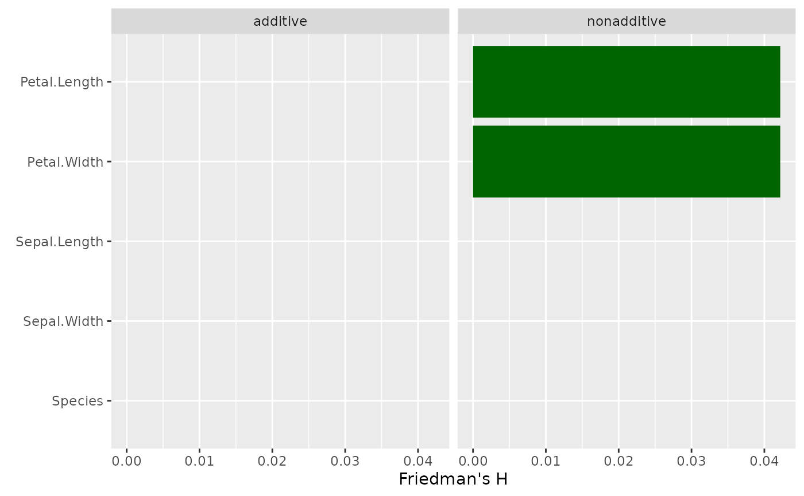
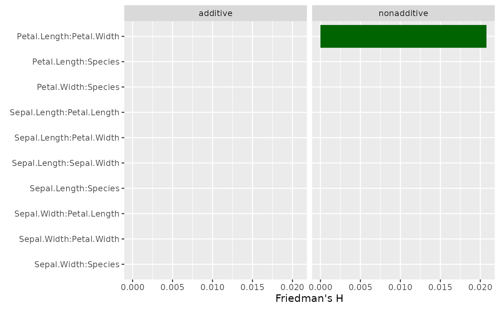
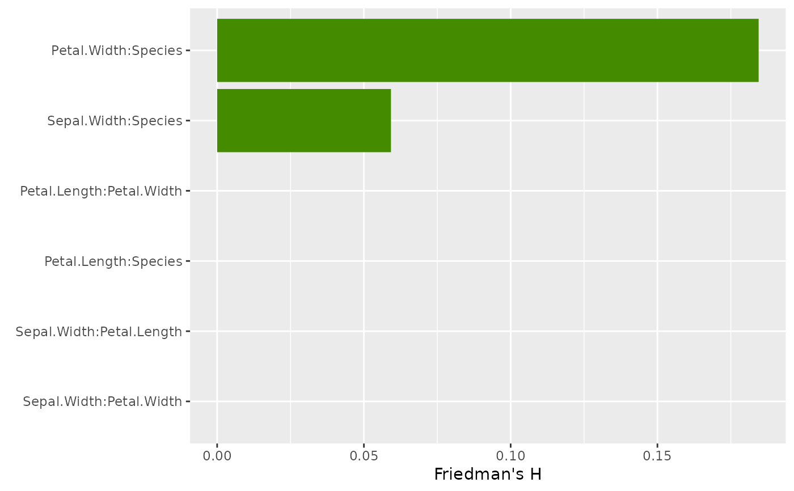
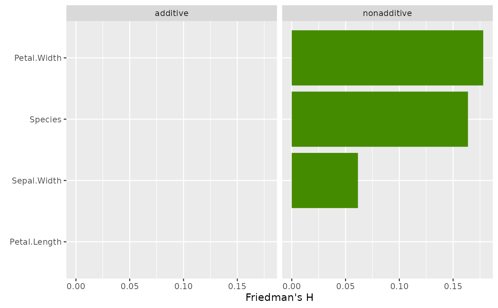

This function provides Friedman's H statistic for overall interaction strength per covariable as well as its version for pairwise interactions, see the reference below.
light_interaction(x, ...)
# Default S3 method
light_interaction(x, ...)
# S3 method for class 'flashlight'
light_interaction(
x,
data = x$data,
by = x$by,
v = NULL,
pairwise = FALSE,
type = c("H", "ice"),
normalize = TRUE,
take_sqrt = TRUE,
grid_size = 200L,
n_max = 1000L,
seed = NULL,
use_linkinv = FALSE,
...
)
# S3 method for class 'multiflashlight'
light_interaction(x, ...)An object of class "flashlight" or "multiflashlight".
Further arguments passed to or from other methods.
An optional data.frame.
An optional vector of column names used to additionally group the results.
Vector of variable names to be assessed.
Should overall interaction strength per variable be shown or
pairwise interactions? Defaults to FALSE.
Are measures based on Friedman's H statistic ("H") or on "ice" curves?
Option "ice" is available only if pairwise = FALSE.
Should the variances explained be normalized?
Default is TRUE in order to reproduce Friedman's H statistic.
In order to reproduce Friedman's H statistic,
resulting values are root transformed. Set to FALSE if squared values
should be returned.
Grid size used to form the outer product. Will be randomly
picked from data (after limiting to n_max).
Maximum number of data rows to consider. Will be randomly picked
from data if necessary.
An integer random seed used for subsampling.
Should retransformation function be applied? Default is FALSE.
An object of class "light_importance" with the following elements:
data A tibble containing the results. Can be used to build fully customized
visualizations. Column names can be controlled by
options(flashlight.column_name).
by Same as input by.
type Same as input type. For information only.
As a fast alternative to assess overall interaction strength, with type = "ice",
the function offers a method based on centered ICE curves:
The corresponding H* statistic measures how much of the variability of a c-ICE curve
is unexplained by the main effect. As for Friedman's H statistic, it can be useful
to consider unnormalized or squared values (see Details below).
Friedman's H statistic relates the interaction strength of a variable (pair)
to the total effect strength of that variable (pair) based on partial dependence
curves. Due to this normalization step, even variables with low importance can
have high values for H. The function light_interaction() offers the option
to skip normalization in order to have a more direct comparison of the interaction
effects across variable (pairs). The values of such unnormalized H statistics are
on the scale of the response variable. Use take_sqrt = FALSE to return
squared values of H. Note that in general, for each variable (pair), predictions
are done on a data set with grid_size * n_max, so be cautious with
increasing the defaults too much. Still, even with larger grid_size
and n_max, there might be considerable variation across different runs,
thus, setting a seed is recommended.
The minimum required elements in the (multi-) flashlight are a "predict_function", "model", and "data".
light_interaction(default): Default method not implemented yet.
light_interaction(flashlight): Interaction strengths for a flashlight object.
light_interaction(multiflashlight): for a multiflashlight object.
Friedman, J. H. and Popescu, B. E. (2008). "Predictive learning via rule ensembles." The Annals of Applied Statistics. JSTOR, 916–54.
# First model with interactions
fit_nonadd <- lm(
Sepal.Length ~ . + Sepal.Width:Species + Petal.Width:Species, data = iris
)
fl_nonadd <- flashlight(
model = fit_nonadd, label = "nonadditive", data = iris, y = "Sepal.Length"
)
# Friedman's H per feature
plot(light_interaction(fl_nonadd), fill = "chartreuse4")

# Unnormalized H^2 measures proportion of bivariate effect explained by interaction
plot(
light_interaction(fl_nonadd, normalize = TRUE, take_sqrt = TRUE),
fill = "chartreuse4"
)

# Pairwise H
plot(light_interaction(fl_nonadd, pairwise = TRUE), fill = "chartreuse4")

# Second model without interactions
fit_add <- lm(Sepal.Length ~ ., data = iris)
fl_add <- flashlight(
model = fit_add, label = "additive", data = iris, y = "Sepal.Length"
)
fls <- multiflashlight(list(fl_add, fl_nonadd))
plot(light_interaction(fls), fill = "chartreuse4")
